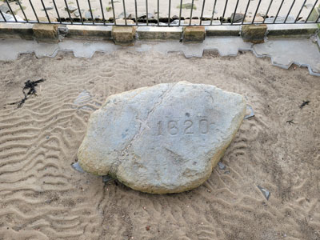
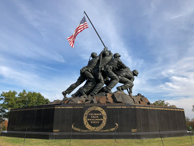
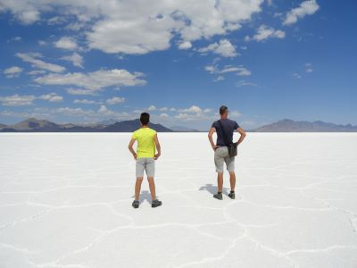
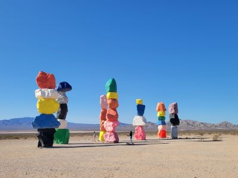
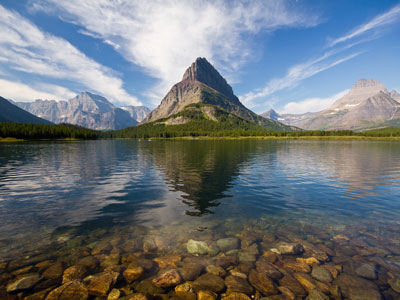
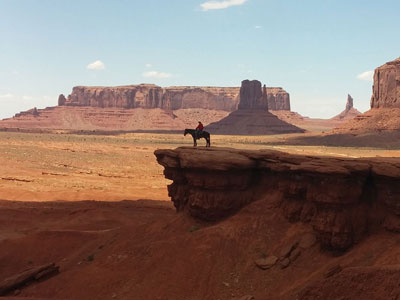
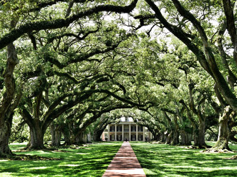
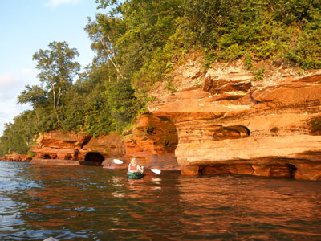

These locations are some of the most iconic and photogenic spots in the United States. They offer stunning backdrops for memorable photos and are popular destinations for travelers seeking picturesque views.
Statue of Liberty
New York City, New York
Iconic symbol of freedom and democracy, standing on Liberty Island in New York Harbor.

September 11 Memorial
New York City, New York
Moving memorial honoring the victims of the September 11, 2001 attacks on the World Trade Center.

Richardmouser, CC BY-SA 4.0, via Wikimedia Commons; Image Size Adjusted

Times Square
New York City, New York
Vibrant commercial and entertainment hub known for its bright lights, billboards, and bustling atmosphere.

King of Hearts, CC BY-SA 4.0, via Wikimedia Commons; Image Size Adjusted

Radio City Music Hall
New York City, New York
Historic entertainment venue in New York City, known for its Art Deco design and hosting the famous Rockettes dance troupe.

Central Park
New York City, New York
Iconic urban park spanning 843 acres in Manhattan, featuring lakes, meadows, and numerous attractions.

Thomas Wolf, www.foto-tw.de, CC BY-SA 3.0, via Wikimedia Commons; Image Size Adjusted
.jpg){kind=link}
Empire State Building
New York City, New York
Famous Art Deco skyscraper that was the tallest building in the world for nearly 40 years, offering panoramic views of the city from its observation decks.
Brooklyn Bridge
New York City, New York
Historic suspension bridge connecting Manhattan and Brooklyn, offering iconic views of the East River and city skyline.

Chrysler Building
New York City, New York
Famous Art Deco skyscraper known for its distinctive silhouette and ornate design, featuring a prominent crown and decorative elements.

Diliff, CC BY-SA 3.0, via Wikimedia Commons; Image Size Adjusted

One World Trade Center
New York City, New York
The tallest building in the Western Hemisphere, standing as a symbol of resilience and rebirth in the heart of Manhattan.

Diliff, CC BY-SA 3.0, via Wikimedia Commons; Image Size Adjusted

Ellis Island
New York City, New York
Historic immigration inspection station that processed millions of immigrants in the early 20th century.
Coney Island
Historic seaside resort in Brooklyn, New York, known for its amusement parks, boardwalk, and beach.

Rockefeller Center
Iconic complex of commercial buildings in Midtown Manhattan, known for its Art Deco architecture, ice skating rink, and annual Christmas tree lighting.

The White House
Washington, D.C.
Official residence and workplace of the President of the United States, located in Washington, D.C.
Washington, D.C.

United States Capitol
Washington, D.C.
Building housing the United States Congress, located in Washington, D.C.

Lincoln Memorial
Washington, D.C.
Monument honoring Abraham Lincoln, the 16th President of the United States, located in Washington, D.C.

Photo by Stephen Leonardi on Unsplash; Image Size Adjusted
Washington Monument
Washington, D.C.
Iconic obelisk monument honoring George Washington, the first President of the United States, located in Washington, D.C.

Paul Hermans, CC BY-SA 3.0, via Wikimedia Commons; Image Size Adjusted

United States Supreme Court
Washington, D.C.
The highest court in the federal judiciary of the United States, located in Washington, D.C.

Sandy Horvath-Dori from Grand Junction, CO, USA, CC BY 2.0, via Wikimedia Commons; Image Size Adjusted
.jpg){kind=link}
Fords Theatre
Historic theater in Washington, D.C., known as the site of President Abraham Lincoln's assassination in 1865.

Jefferson Memorial
Monument honoring Thomas Jefferson, the third President of the United States, located in Washington, D.C.

Lincoln Memorial Reflecting Pool
Reflecting pool located in front of the Lincoln Memorial in Washington, D.C., providing a serene contrast to the surrounding monuments and architecture.
-400.jpg)
Photo by Leonel Heisenberg on Unsplash; Image Size Adjusted
Martin Luther King Jr. Memorial
Washington, D.C.
Memorial dedicated to Dr. Martin Luther King Jr., featuring a large stone sculpture and inscriptions of his famous quotes.

Tomas Castelazo, CC BY-SA 3.0, via Wikimedia Commons; Image Size Adjusted

Vietnam Veterans Memorial
Memorial dedicated to the men and women who served in the Vietnam War, featuring a black granite wall inscribed with the names of those who died or are missing in action.

Wearethenext, CC BY-SA 3.0, via Wikimedia Commons; Image Size Adjusted

Liberty Bell (Independence Hall)
Philadelphia, Pennsylvania
Historic building where the Declaration of Independence and the U.S. Constitution were debated and signed.

RyanFSpack, CC0, via Wikimedia Commons; Image Size Adjusted

Philadelphia Museum of Art (Rocky Steps)
Philadelphia, Pennsylvania
Iconic art museum in Philadelphia, Pennsylvania, known for its grand staircase (the "Rocky Steps") and extensive collection of artworks.

Jon Sullivan, PD Photo., Public domain, via Wikimedia Commons; Image Size Adjusted

Niagara Falls
New York
Famous waterfall on the border between the United States and Canada, consisting of three waterfalls: Horseshoe Falls, American Falls, and Bridal Veil Falls.

Clément Bardot, CC BY-SA 3.0, via Wikimedia Commons; Image Size Adjusted

Plymouth Rock
Plymouth, Massachussetts
Legendary rock in Plymouth, Massachusetts, traditionally regarded as the landing site of the Pilgrims in 1620.

PortableNYCTours, CC BY-SA 4.0, via Wikimedia Commons; Image Size Adjusted
.jpg){kind=link}
Arlington National Cemetery
Arlington, Virginia
Scenic cemetery offering beautiful views of the Potomac River and historic landmarks, perfect for walking or cycling.

Ian Howard, CC BY-SA 3.0, via Wikimedia Commons; Image Size Adjusted

United States Marine Corps War Memorial
Arlington, Virginia
Honoring the service and sacrifice of Marines throughout history, this memorial features a striking statue and educational exhibits.

Liveit or livewithit, CC BY-SA 3.0, via Wikimedia Commons; Image Size Adjusted

Red Rock Park and Amphitheatre
Colorado
Amphitheater and park known for its very large red sandstone outcrops.

Fabio Achilli from Milano, Italy, CC BY 2.0, via Wikimedia Commons; Image Size Adjusted
.jpg){kind=link}
Bonneville Salt Flats
Utah
30,000 acre expanse of hard, white salt crust on the western edge of the Great Salt Lake basin in Utah.

"What Lifts You" Mural
The Gulch > Nashville, Tennessee
Vibrant outdoor mural depicting a pair of large angel wings painted on a wall, designed as an interactive backdrop for photos.

Jeffhollett, CC BY-SA 4.0, via Wikimedia Commons; Image Size Adjusted

Thors Well
Cape Perpetua > Oregon Coast > Oregon
Natural coastal rock formation featuring a circular sinkhole where ocean waves surge upward and drain dramatically through a rugged basalt shoreline
Delicate Arch
Arches National Park > Utah
Freestanding natural arch is the most widely recognized landmark in Arches National Park.

Fannette Island
Lake Tahoe, California
Small rocky island featuring a historic stone tea house ruin surrounded by clear alpine waters and mountain scenery.

Paul Kordwig Post.eingang, CC BY-SA 3.0, via Wikimedia Commons; Image Size Adjusted

The Wave
Sandstone rock formation located in Arizona, near border with Utah is well-known among hikers and photographers for its colorful, undulating forms.

Photo by Elizabeth Villalta on Unsplash; Image Size Adjusted
Seven Magic Mountains
Vibrant public art installation of seven towering stacks of brightly painted boulders set against the Mojave Desert landscape.

Minipaula, CC BY-SA 3.0, via Wikimedia Commons; Image Size Adjusted

Wormsloe Historic Site
Savannah, Georgia
State historic site protecting part of what was once the Wormsloe Plantation, a large estate established by one of Georgia's colonial founders.

Jeff P from Berkeley, CA, USA, CC BY 2.0, via Wikimedia Commons; Image Size Adjusted
.jpg){kind=link}
Swiftcurrent Lake
Glacier National Park > Montana
Glacially formed alpine lake bordered by forested slopes and rugged peaks creating reflective water views and access to surrounding trails.

M.mastrangelo, CC BY-SA 4.0, via Wikimedia Commons; Image Size Adjusted

John Ford Point
Monument Valley > Arizona
Elevated desert viewpoint overlooking vast red sandstone buttes and mesas rising from a wide valley floor often framed by expansive skies.

Photo by Dirk Spijkers on Unsplash; Image Size Adjusted
Oak Alley Plantation
Louisiana
Property designated a National Historic Landmark for its architecture and landscaping, and for the agricultural innovation of grafting pecan trees.

Brynn, CC BY-SA 3.0, via Wikimedia Commons; Image Size Adjusted

Split Rock Lighthouse
North Shore > Minnesota
State park best known for the picturesque Split Rock Lighthouse, one of the most photographed lighthouses in the United States.

Tim Wilson from Blaine, MN, USA, CC BY 2.0, via Wikimedia Commons; Image Size Adjusted
.jpg){kind=link}
Apostle Islands National Lakeshore
Wisconsin
National lakeshore protecting 21 islands and a 12-mile stretch of mainland along the south shore of Lake Superior, known for its sea caves, lighthouses, and old-growth forests.